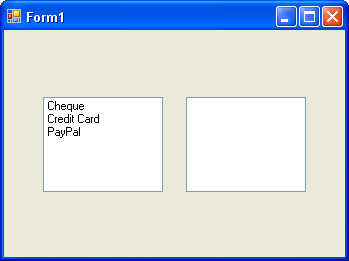
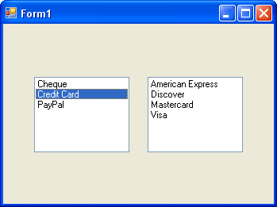
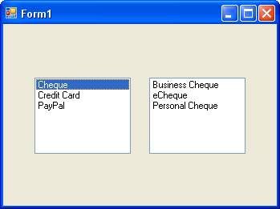
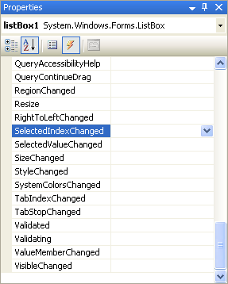
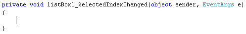
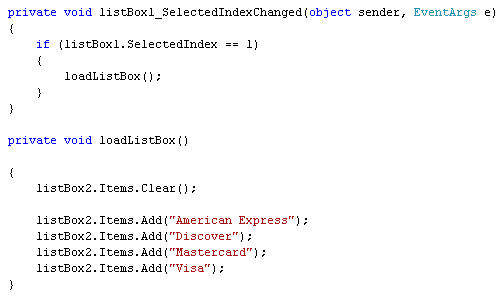

C# .NET - ListBox and ComboBox Events
A useful event you may want to use for a ListBox or a ComboBox is the SelectedIndexChanged event. You can use this event to get which item in your List or Combo box was selected. The event will fire again when you select a new item. Why is this useful? Well, as an example, you can populate a second ListBox or ComboBox based on which item was selected in the first one. Examine the image below:

We have two ListBoxes on a form. The first one shows payment methods, and the second one is blank. When Credit Card is clicked in the first ListBox, notice what happens to the second ListBox:

The second ListBox is now displaying the types of credit cards accepted. Click on the Cheque item, and different options are available:

All this happens with the SelectedIndexChanged event.
To see how the code works, start a new project and put two ListBoxes on your form. Click on the first one to select it, and use the Item property to add the three items: Cheque, Credit Card, and PayPal. Now click on the lightning bolt to display the event for a listbox:

Double click the SelectedIndexChanged event to bring up its code stub:

To get at which item in a ListBox or ComboBox was selected, you use the SelectedIndex property. The first item in the list is item 0, the second item 1, etc. So add this if statement to your code:
if (listBox1.SelectedIndex == 1)
{
loadListBox();
}
So we're just checking if the selected index has a value of 1. If it does, we're calling a method - loadListBox. Add the method to your code:

You've already covered ListBoxes in an earlier section, so we won't explain how it works. But Run your programme and test it out. You should find that it works as described above.
Exercise N
Add a second method that loads items when the Cheque payment method is selected.
Call the method from the SelectedIndexChanged event when item 0 is selected
in the first ListBox. When you programme runs, the Cheque payment options should
display in your second ListBox, instead of the Credit Card options.